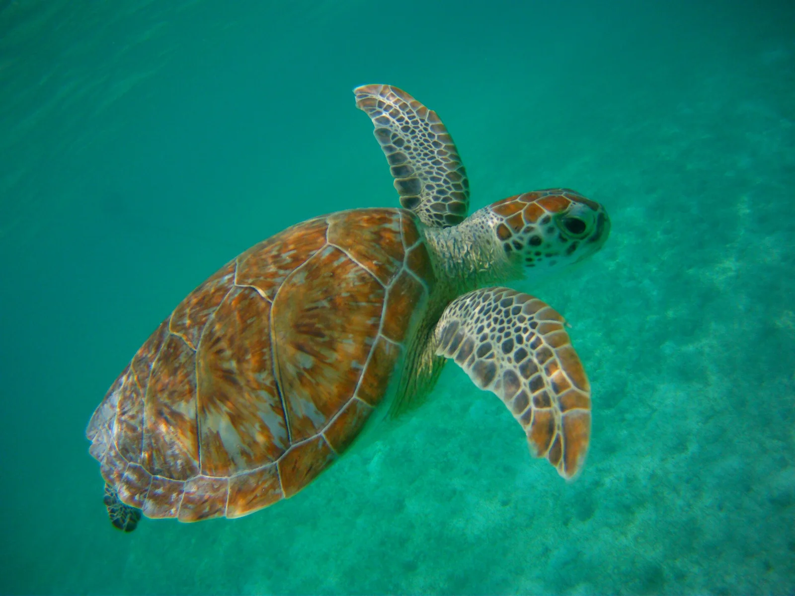

Akumal
Quintana Roo, Mexique · snorkeling, plongée

Entre Playa del Carmen et Tulum, Akumal s’organise autour de plusieurs baies. Pour une sortie en snorkeling, renseigne-toi sur les parcours autorisés et les règles de protection de la faune.
- Lieu
- Quintana Roo, Mexique
- Niveau
- Variable selon les conditions
- Activités
- snorkeling, plongée
- Type d'eau
- Mer / océan
- Coordonnées
- 20.39, -87.31 (position approximative du secteur)
Ouvrir dans Ocean Buddy Télécharger sur l'App Store
Source : Wikipédia · géographie du lieu.